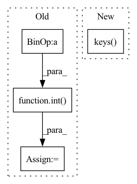

Pattern ID :12222
Before Change
p_bar.update()
_threshold_number = int( _number_all_funds * threshold)
calendar = [date for date in _list_all_date if _list_all_date[date] >= _threshold_number]
return calendar
After Change
p_bar.update()
logger.info(f"count how many funds have founded in this day......")
_dict_count_founding = {date:_number_all_funds for date in _dict_count_trade.keys() } // dict{date:count}
with tqdm(total=_number_all_funds) as p_bar:
with ProcessPoolExecutor(max_workers=max_workers) as executor:
for date_list in executor.map(_fun, file_list[:_number_all_funds]):In pattern: SUPERPATTERN
Frequency: 3
Non-data size: 4
Instances Fragment ID: 41386567
Project Name: microsoft/qlib
Commit Name: 11412727ef9089863b88f4d58b332513350cb115
Time: 2021-03-07
Author: zhangdao@buaa.edu.cn
File Name: scripts/data_collector/utils.py
M Class Name: AnonimousClass
N Class Name: AnonimousClass
M Method Name: get_calendar_list_by_ratio(5)
N Method Name: get_calendar_list_by_ratio(4)
M Parent Class:
N Parent Class:
M File Name: scripts/data_collector/utils.py
N File Name: scripts/data_collector/utils.py
M Start Line: 129
M End Line: 147
N Start Line: 108
N End Line: 160
Before Change
ylabel = plot_obj["ylabel"] if "ylabel" in plot_obj.keys() else "y"
max_row_figs = 4
// reset figure size
rows = int( math.ceil(len(records)/ max_row_figs))
cols = min(len(records), max_row_figs)
fig = plt.figure()
fig_size = fig.get_size_inches()
new_fig_size = (fig_size[0]*cols, fig_size[1]*rows)
num_figs = len(self.records)
fig, ax = plt.subplots(rows, cols, figsize=new_fig_size)
for id, rec in enumerate(self.records):
dict = self.records[rec]
position = dict[pos_key]After Change
def scatter(self, plot_obj):
pos_key = plot_obj["position"]
color = plot_obj["color"] if "color" in plot_obj.keys() else "r"
xlabel = plot_obj["xlabel"] if "xlabel" in plot_obj.keys() else "x"
ylabel = plot_obj["ylabel"] if "ylabel" in plot_obj.keys() else "y"
// max_row_figs = 4 Fragment ID: 41386564
Project Name: wwzzz/easyfl
Commit Name: 44795d2975c3b02f9a24402c4b68269ffab0f8f6
Time: 2022-07-26
Author: zzz510711928@gmail.com
File Name: utils/result_analysis.py
M Class Name: Drawer
N Class Name: Drawer
M Method Name: scatter(2)
N Method Name: scatter(2)
M Parent Class: Analyser
N Parent Class: Analyser
M File Name: utils/result_analysis.py
N File Name: utils/result_analysis.py
M Start Line: 307
M End Line: 325
N Start Line: 312
N End Line: 333
Before Change
vec = torch.take(self.centroids[self.nbits], bins)
for i in range(self.num_hadamard):
vec = self.irht(vec, int( seed + (self.num_hadamard - 1) - i) )
return (scale * vec)[:int(dim)].cpu().numpy()
After Change
curr_index = 0
vec = []
for k in range(2, max(metadata.keys() ) + 1, 2):
scale = metadata[k]
dim = int(metadata[k + 1])
vec.append(self.decompress_slice(bins[curr_index:curr_index + dim], scale, dim, seed)) Fragment ID: 41386573
Project Name: intel/openfl
Commit Name: c10577cb32201c45846d920f871e4bcab76e37ed
Time: 2023-01-13
Author: 30897761+yanivbi@users.noreply.github.com
File Name: openfl/pipelines/eden_pipeline.py
M Class Name: Eden
N Class Name: Eden
M Method Name: decompress(3)
N Method Name: decompress(5)
M Parent Class:
N Parent Class:
M File Name: openfl/pipelines/eden_pipeline.py
N File Name: openfl/pipelines/eden_pipeline.py
M Start Line: 252
M End Line: 260
N Start Line: 337
N End Line: 354